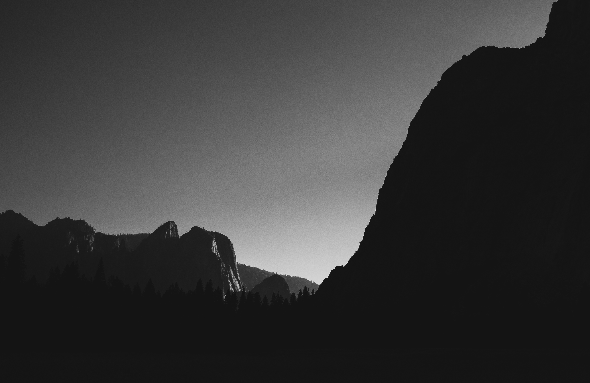

yosemite
This page features some landscape photos I took on a family trip to Yosemite in August 2023. I was inspired by Ansel Adams's iconic, high contrast black and white photos of Yosemite and wanted to experiment with a similar style on the same subject. Here is a first attempt.
Valley One
Yosemite, California (2023)

Trees
Yosemite, California (2023)

Waterfall One
Yosemite, California (2023)

Valley Two
Yosemite, California (2023)

Meadow
Yosemite, California (2023)

Waterfall Two
Yosemite, California (2023)

Rock
Yosemite, California (2023)

Yosemite Falls
Yosemite, California (2023)